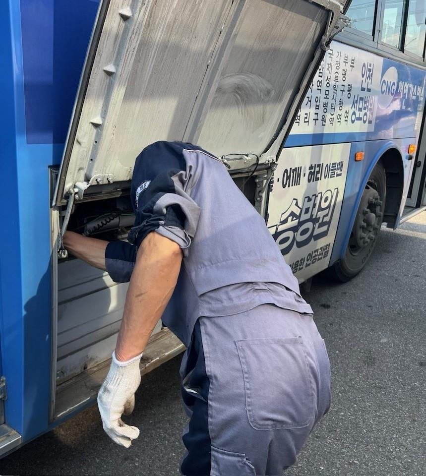

전기버스 한 대 3500만 원 더…인천 등 16개 시·도, 부가세 면제 유지 요구
정부 개정안, 면제 끝을 2028년에서 올해 말로 당겨
AI경제저널=김갑봉 기자 | 인천시가 서울·부산 등 15개 시·도와 함께 친환경 시내·마을버스 부가가치세 면제를 지켜 달라고 정부와 국회에 요구했다. 정부가 낸 「조세특례제한법」 개정안이 국회를 통과하면 면제는 2028년 말이 아니라 올해 말 끝난다. 그러면 내년부터 전기버스 한 대 값이 약 3500만 원 오른다.

2027년 1월 출고분부터 차량값의 10%
지금 법은 전기·수소 같은 친환경 시내·마을버스를 공급할 때 부가가치세를 면제한다. 적용 기한은 2028년 12월 31일이다. 정부 개정안은 이 기한을 2026년 12월 31일로 2년 앞당긴다. 개정안은 국회에 올라가 있다.
개정안이 통과되면 2027년 1월 1일 이후 출고하는 차량부터 차량값의 10%가 부가가치세로 붙는다. 서울시는 전기버스 평균 차량값을 약 3억5000만 원으로 잡고, 한 대에 약 3500만 원을 더 내야 한다고 셈했다.
버스를 바꾸는 물량도 많다. 16개 시·도의 올해 버스 대폐차(교체) 물량은 3500여 대다. 내년에는 4000대 넘는 버스가 세금 혜택 축소의 영향을 받을 것으로 시·도들은 내다봤다. 새로 생기는 부담은 한 해 약 1398억 원으로 추산했다.
16개 시·도 모두 이름을 올렸다
공동 요구 자료는 서울시가 5일 냈고, 붙임에 16개 시·도 담당 부서가 이름을 올렸다. 서울, 전남광주, 부산, 대구, 인천, 대전, 울산, 세종, 경기, 강원, 충북, 충남, 전북, 경북, 경남, 제주다. 16개 시·도 모두다.
요구는 둘이다. 정부가 발의한 「조세특례제한법」 개정을 멈추고 친환경 시내·마을버스 부가가치세 면제를 지금대로 두라는 것이다. 친환경 저상버스 국비 보조금을 늘려 달라는 요구도 담았다.
시·도들은 내년부터 압축천연가스(CNG) 버스 생산이 멈춘다는 점을 들었다. 친환경 버스로 바꾸는 일이 선택이 아니라 필수가 됐는데, 차량값이 오르면 전환에 차질이 생긴다는 것이다.
부가세 면제 종료가 인천에 말하는 것
첫째, 시 재정이다. 시·도들은 면제가 끝나면 버스 운수사와 지자체의 재정 부담이 커진다고 밝혔다. 인천시는 내년 예산안에 시내버스 준공영제 2310억 원, 광역버스 준공영제 670억 원을 편성했다. 광역버스 준공영제는 올해보다 400억 원 늘었다.
둘째, 인천 버스의 짜임이다. 인천 시내·광역버스는 약 2500대이고, 이 가운데 수소버스가 약 600대다. 열 대 가운데 두 대 남짓이 수소버스다.
서울시의 3500만 원은 전기버스 기준이다. 부가가치세는 차량값의 10%여서 차량값이 비싼 버스일수록 세금도 커진다. 시는 지난해 수소저상버스 보조금을 한 대에 3억 원으로 정했다.
셋째, 일터다. 시·도들은 재정이 약한 운수사를 걱정했다. 민영 마을버스 같은 곳은 수천만 원의 초기 비용 탓에 친환경 버스 도입을 꺼릴 수 있다. 교체 물량을 줄이고 낡은 차를 더 굴릴 수밖에 없다고 시·도들은 밝혔다.
넷째, 발표에 없는 숫자다. 공동 자료는 서울의 대폐차 계획만 밝혔다. 서울은 올해 585대에서 내년 741대로 26.7% 늘고, 2030년에는 1256대가 된다.
인천을 비롯한 다른 시·도의 교체 대수와 시·도별 부담액은 자료에 없다. 추산액 1398억 원을 대당 3500만 원으로 나누면 약 3994대다(AI경제저널 계산). 시·도들이 말한 "4000대 이상"과 맞물리는 숫자다.
같은 법, 다른 조항도 올해 말 끝난다
같은 「조세특례제한법」의 하이브리드·전기·수소차 개별소비세 감면도 올해 12월 31일 끝난다. 이를 2029년 말까지 3년 늘리자는 의원 발의 개정안이 9월 28일 국회 재정경제기획위원회에 상정됐다. 두 개정안 모두 국회에 올라가 있다.
개정안 처리는 국회 몫으로 남았다. 인천시 문의는 교통정책국 버스정책과(032-440-3942)가 받는다.
참고문헌
- 서울특별시 교통실 버스정책과(2026). 서울시, 전국 15개 지자체와 친환경 버스 부가세 면제 유지 촉구(보도자료, 16개 시·도 공동배포). 2026년 11월 5일. https://www.seoul.go.kr/news/news_report.do#view/469622
- 인천광역시 예산담당관(2026). 인천시, 2027년 예산안 15조 9천억 원 편성, 민생 지키고 인천 제값 찾는다(보도자료). 2026년 11월 5일. https://www.incheon.go.kr/IC010205/view?repSeq=DOM_0000000015900573
- 인천광역시 버스정책과(2026). 인천시, 액화수소생산시설 대정비 대비 수소버스 운행 차질 최소화(보도자료). 2026년 9월 28일. https://www.incheon.go.kr/IC010205/view?repSeq=DOM_0000000015637827
- 인천광역시 에너지산업과(2025). 인천시, 전국 최다 수소버스 보급 … 기후위기 대응에 앞장(보도자료). 2025년 1월 22일. https://www.incheon.go.kr/IC010205/view?repSeq=DOM_0000000011683733
- 국민참여입법센터. 조세특례제한법 일부개정법률안(김주영의원 등 11인, 의안번호 2219103) 국회진행상황. https://opinion.lawmaking.go.kr/gcom/nsmLmSts/out/2219103/detailRP
[사진 출처]
- [사진1] 인천광역시 보도자료 「쾌적하고 안전한 대중교통! 인천시, 시내버스 합동점검 시행」 붙임 「2024년 점검 사진」, 공공누리 제1유형, 2025.3.10., https://www.incheon.go.kr/IC010205/view?repSeq=DOM_0000000011953776
관련기사
- 인천시 내년 예산 15조9천억…정부 이전재원이 자체수입 앞섰다
- 인천시 "국비 1306억 더"…노동감독관 인건비·인천e음·M버스
- 송도트램 사업비 68% 불어난 채…2027년 예타 재도전
저작권자 © AI경제저널 무단전재 및 재배포, AI학습 및 활용 금지